Advancements in diffusion models have significantly improved video quality, directing attention to fine-grained controllability. However, many existing methods depend on fine-tuning large-scale video models for specific tasks, which becomes increasingly impractical as model sizes continue to grow. In this work, we present Frame Guidance, a training-free guidance for controllable video generation based on frame-level signals, such as keyframes, style reference images, sketches, or depth maps. For practical training-free guidance, we propose a simple latent processing method that dramatically reduces memory usage, and apply a novel latent optimization strategy designed for globally coherent video generation. Frame Guidance enables effective control across diverse tasks, including keyframe guidance, stylization, and looping, without any training, compatible with any video models. Experimental results show that Frame Guidance can produce high-quality controlled videos for a wide range of tasks and input signals.
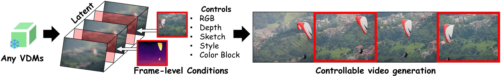
Frame Guidance is a training-free, frame-level controllable video generation method that leverages gradient-based guidance on latent space. It can be applied to a wide range of tasks, including keyframe guidance, stylization, and looping.
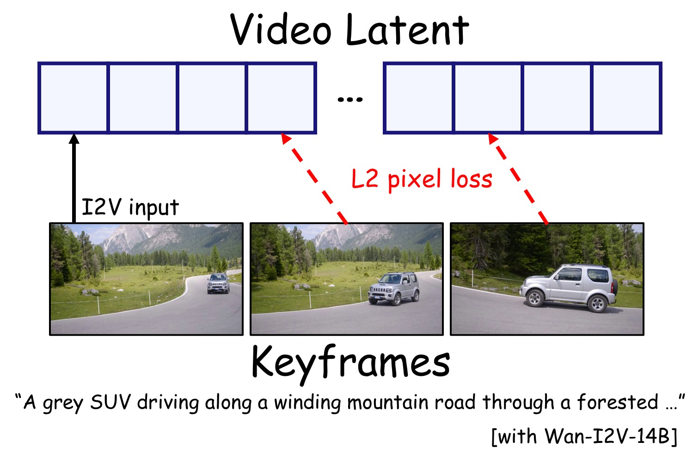
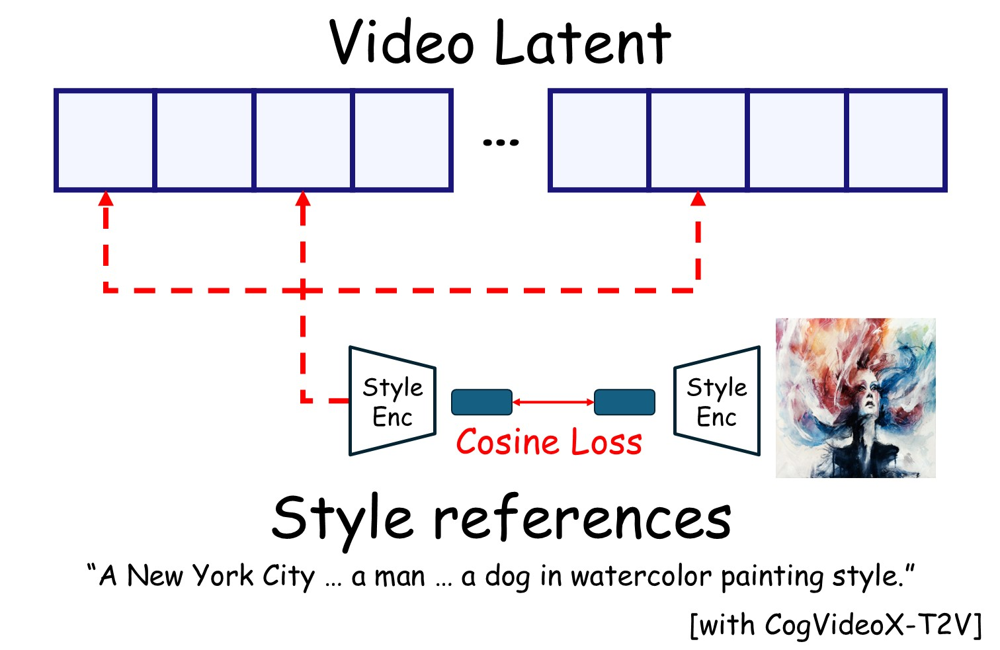
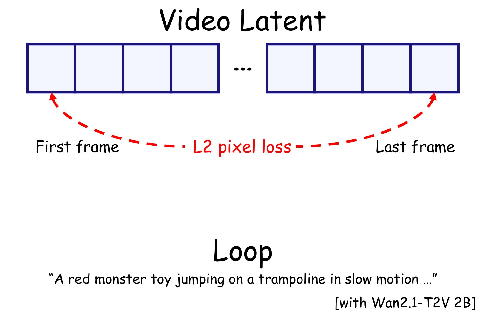
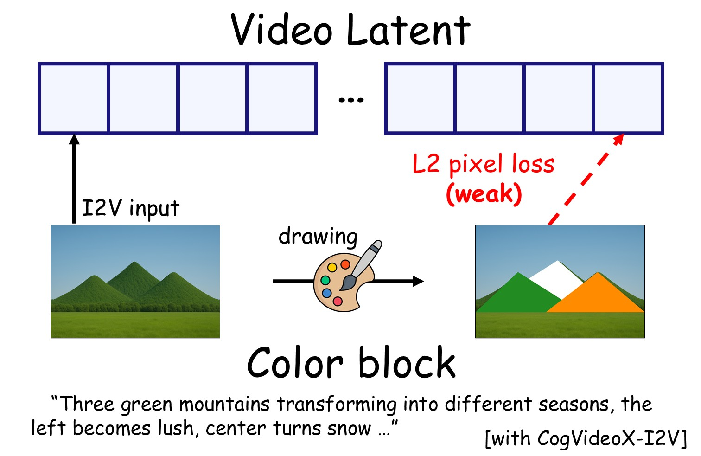
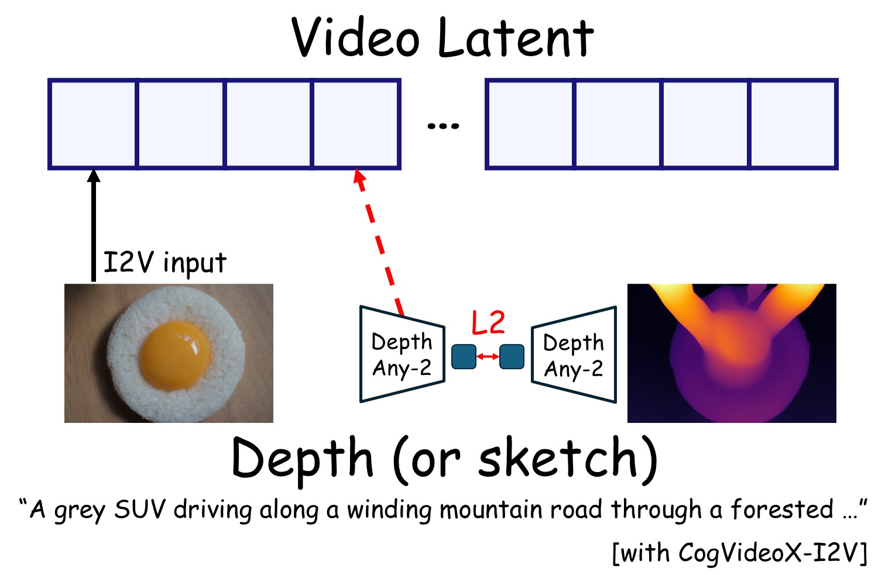
More applications (editing, masked loss, etc.) and further details are available in the paper!
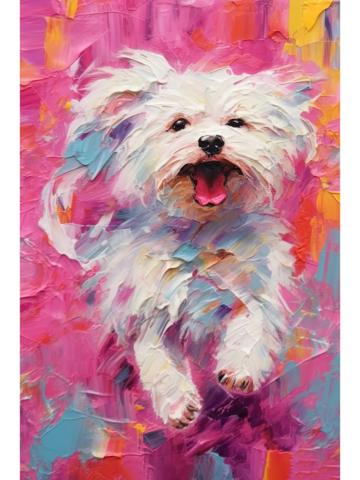
A bustling Paris cafe in the morning, waiters serving coffee, people chatting at tables, and a dog lying under in Impasto oil painting style with vibrant colors.
A bustling Paris cafe in the morning, waiters serving coffee, people chatting at tables, and a dog lying under in Picasso-inspired cubist aesthetic style.
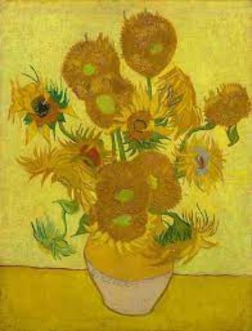
A New York City street scene with a man and a woman walking down the street, a dog running after them, and a bicyclist passing by, in oil painting style.
We apply training-free guidance on a few generated frames during inference. However, extending to video diffusion models is non-trivial due to
(1) Challenge in handling 3D-VAE (CausalVAE) latent space and Out-of-Memory (OOM) issue in video decoding, and
(2) Existing optimization method from T2I are not well-suited for video generation.
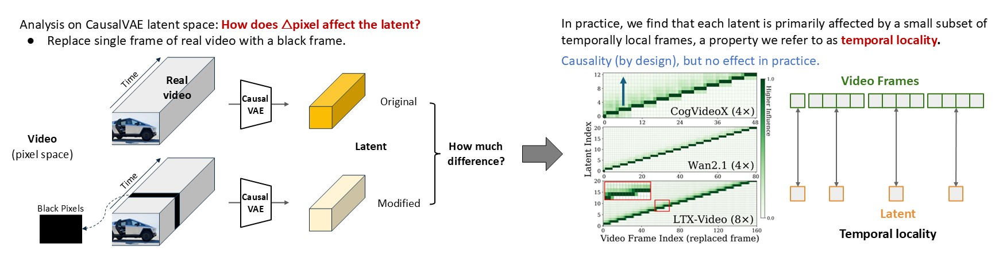
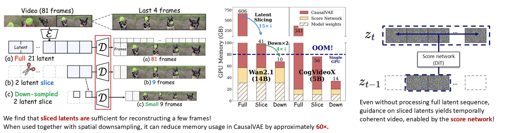
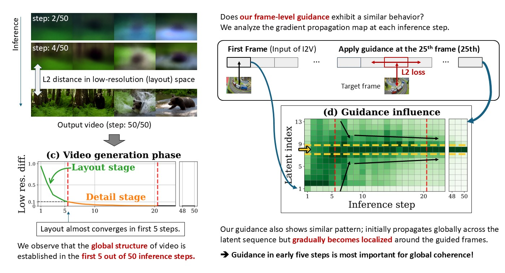
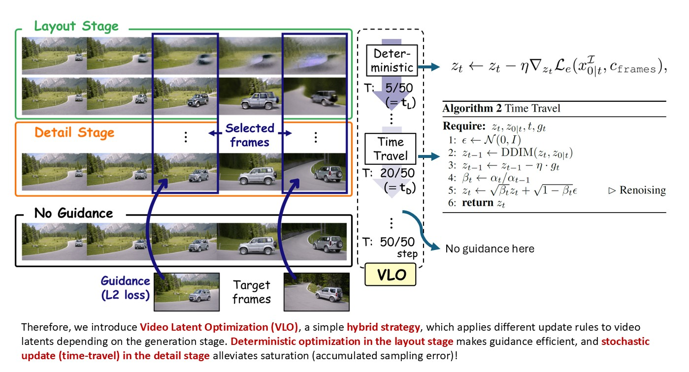
@article{jang2025frameguidance,
title={Frame Guidance: Training-Free Guidance for Frame-Level Control in Video Diffusion Models},
author={Sangwon Jang and Taekyung Ki and Jaehyeong Jo and Jaehong Yoon and Soo Ye Kim and Zhe Lin and Sung Ju Hwang},
journal={arXiv preprint arXiv:2506.07177},
year={2025},
}